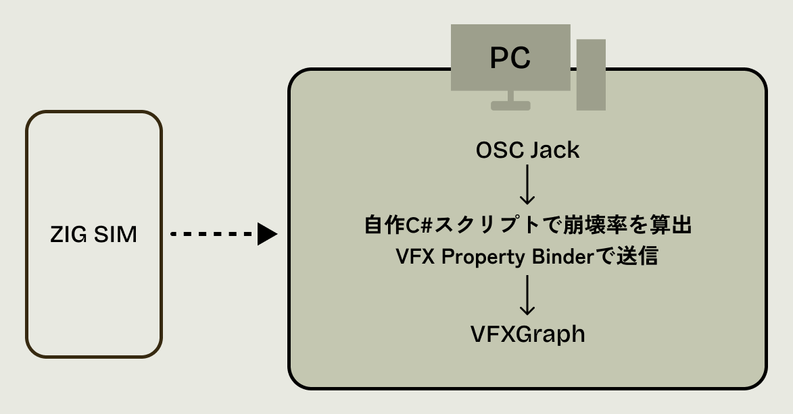
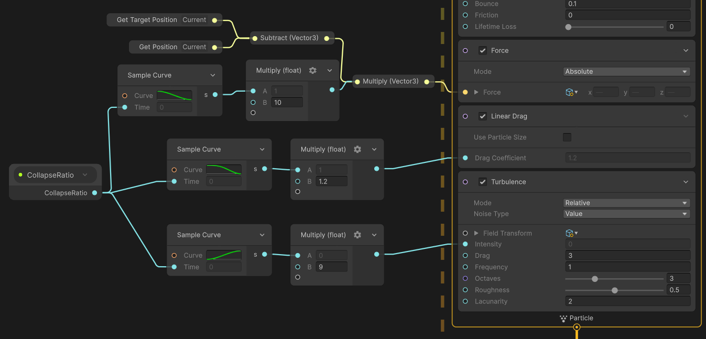
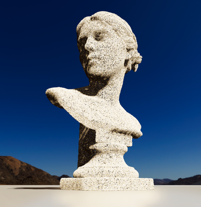

Outline
スマートフォンとUnityをOSC通信で同期させたインタラクティブアート
デバイスの傾きとUnity上の物理演算をリアルタイムに連動させ、胸像彫刻が数十万の砂粒となって崩壊・修復するインタラクションを制作しました。
通信部分には
ZIG SIM
と高橋啓次郎氏の
OscJack
を使用しています。通信周りをゼロから構築するのではなく、既存の強力なツールを適切に組み合わせることで、素早くかつ安定した制作を実現しました。デバイスを通じた触り心地やリアルタイムレンダリングの質感表現を探求した作品です。
Technical Approach
役割を分離したカスタムBinderの実装
C#スクリプト内でVFXの全パラメータを制御するのではなく、独自のカスタムBinderを実装して役割を明確に分けました。C#側では、デバイスの角度から崩壊率(0.0~1.0)を算出するというロジックに専念させています。その数値をVFXGraphへ渡し、Turbulenceの強さや戻る力の具体値を全てVFXGraph内で制御する設計にしました。これにより、ビジュアルや触り心地の微調整を全てノード上で完結できるようになり、トライ&エラーを素早く回せる効率的な制作フローを構築しています。

システム概要
心地よい手触りへの追求
スマートフォンの動きに合わせた砂の崩れ方と元に戻るときの挙動の気持ちよさにこだわりました。Binderから受け取った崩壊率に対し、VFXGraph内でSample Curve(カーブ調整)を繋ぎ、傾きに応じて空気抵抗(Linear Drag)や修復力(Force)の強さがダイナミックに変化するように設計しています。急激なバウンドを防ぎつつ、自然な動きのバランスを何度も検証し、自分の手と画面内の砂が完全にリンクしているような心地よい手触りを実装しました。

手触りの調整を行っているVFXノード群
50万パーティクルの砂表現とLookDev
50万個の大量のパーティクルを砂としてリアルに見せつつ、処理負荷を抑える工夫をしています。実際の砂粒のような複雑な3Dモデルは使わず、単純なCubeメッシュに対し、ランダムなスケール(XYZ)と回転角度を加え、色にもムラを作ることでリアルな砂表現を軽量に実現しました。さらに、パーティクル同士のCast ShadowsとHDRI、Volume設定を活用して写実的な表現を目指しています。砂漠地帯のような彩度とコントラストの高い空間を意識して全体のルックを仕上げました。

砂の胸像